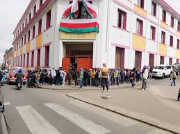
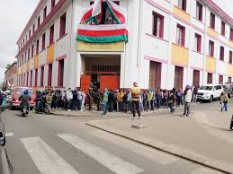
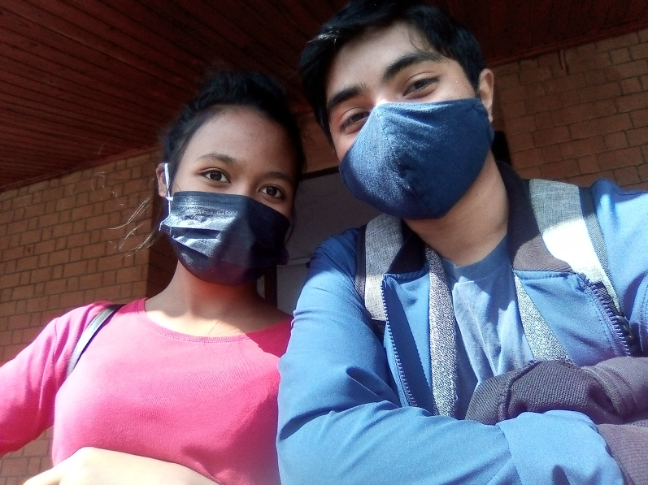
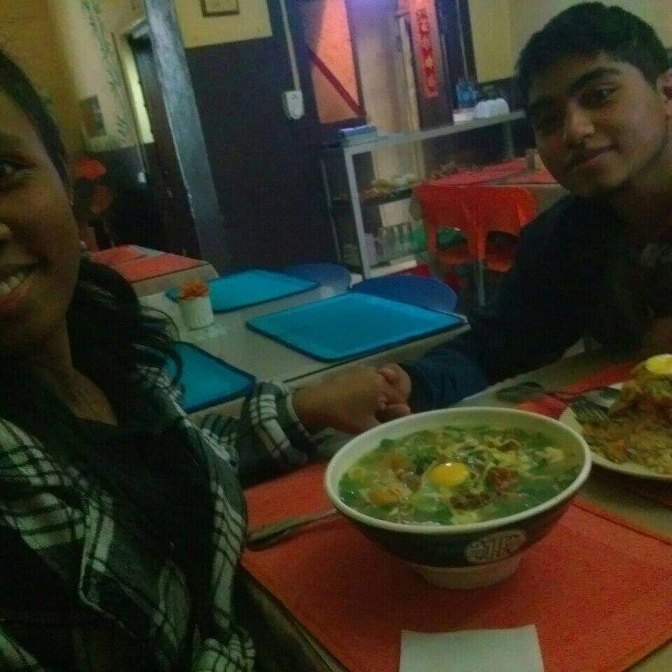
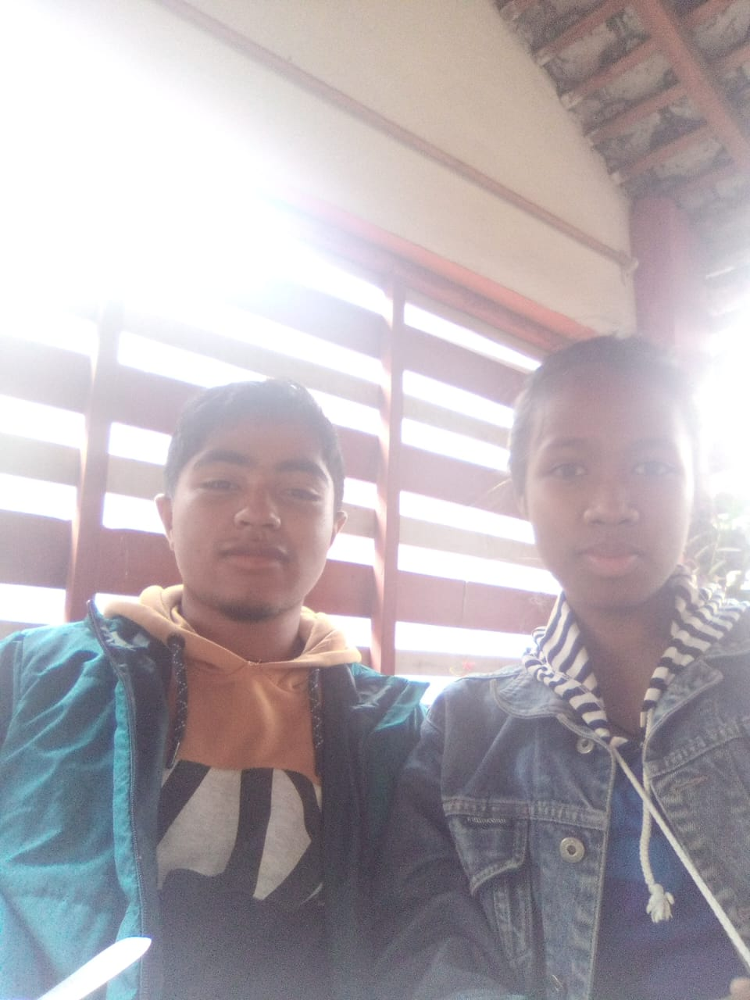

29 Novembre 2021
Notre première rencontre, le début d'une belle aventure.
Un voyage à travers les moments précieux que nous avons partagés
Notre première rencontre, le début d'une belle aventure.
Notre premier rendez-vous, Musée de la photographie
Tu as dit oui 🥰
1 an
